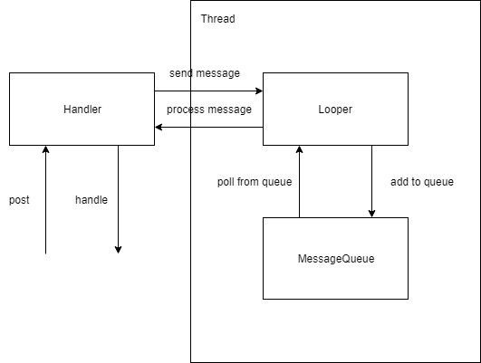
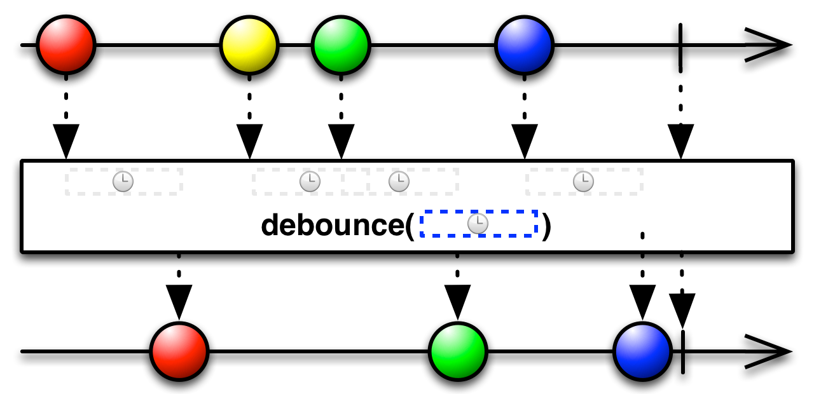

Introduction
Handler and Looper are one of the main low-level Android OS things, which almost nobody uses directly (at least nowadays). But they are at the core, so many other high-level solutions are based on them. Therefore one should know what Handler and Looper are, what and how they are doing.
In this article we’ll try to understand Handler and Looper in Android. What, how and why we might need them. We’ll start from some basic knowledge on classes and what they are doing, continue with relations between them. Then we’ll look at each class separately trying to dive deep into details. And will finish with some canonical examples on where they can be used.
Basics
If we try to describe this complex topic in simple words we might get something like this:
Looper is an abstraction over event loop (infinite loop which drains queue with events) and Handler is an abstraction to put/remove events into/from queue with events (which is drained by Looper) and handle these events when they are processed.
Put everything together

This diagram shows how classes are connected together. We have a thread, in which we have a Looper. Each Looper has its own MessageQueue. Looper drains the MessageQueue. Handler is created for some particular Looper and is used to post messages to it and handle these messages when they are processed.
The relations are the following:
-
Each Looper has exactly 1 MessageQueue
-
Each Looper “has” exactly 1 parent Thread
-
Looper might have many different Handlers
Diving deeper
Message
Message is a data object. It contains payload of the “message”. As it can be sent to various Android components, Message class implements Parcelable interface (so that it can be put in extras to bundles and intents).
Being a data object Message can have some data inside. Primarily it is:
-
int what — message code to understand what this message is about (e.g. what action it represents)
-
int arg1, arg2 — simple integer primitives to store some payload values
-
Object obj — custom object, which we might send
-
Runnable callback — custom action which we might send
NOTE: not all of these items are required in a message. Also some of the items exclude each other. For example there are two main types of Messages: 1) messages which use what and messages which use callback. This means that we might either send some action inside the Message (using callback) or send some arbitrary message (using what)
Message is a public class and has public constructors along with all fields described above being public. So it is possible technically to create instance of message and set all the required data manually. But for performance reasons Message has best practice to use obtain methods to get already created instance of Message (which is not in use at the moment) from pool of Messages and init it with required data. The usage is pretty straightforward, e.g. if we want to obtain Message with what and some custom obj, then we’ll write:
val msg = Message.obtain(handler, what, object)
More information on Message class one can find in the source code here.
MessageQueue
MessageQueue as name states is just a queue of messages. This is exactly the implementation of a queue where Handler puts events onto and which Looper is draining.
There is not much interest in this for now, but if you’re curious you can look at the source code here.
Looper
Looper is a class that runs message loop for some thread. In Java we have threads, in which we might do some useful work. Initially threads don’t have an event loop capabilities, but we can add this capabilities via attaching Looper to them.
Looper has two main methods: prepare and loop. The first method prepare — inits thread and attaches Looper to it. The second method loop starts event loop.
**NOTES: **
- It should be clear that running Looper before it was attached to a thread will lead to exceptions. Ensure that prepare method was called inside a thread and only then call loop.
- Each thread can have only one Looper. This is controlled by the ThreadLocal
object inside Looper class. So calling prepare method twice inside same thread will also lead to an exception.
The last methods which are interesting to us in Looper class are quit and quitSafely. These methods are used to stop event loop. The first one is not safe as it will terminate processing the queue and some events might be left unprocessed. The second waits until all the messages are processed and then terminates, therefore it is called safe.
Handler
Handler is a class which allows you to send and handle Messages and Runnables from thread’s MessageQueue. Basically it works the following way:
-
Client initializes Handler and Looper (so the whole infrastructure is now ready to use)
-
Client sends messages to Handler
-
Handler posts messages to Looper’s MessageQueue
-
Looper processes messages in MessageQueue
-
When message is ready to be processed, Looper sends it back to Handler, which can handle message.
So, we see that Handler does two things: 1) posts messages to be placed in a queue, 2) handles messages when they were processed by Looper.
Let’s look at each thing separately. And we’ll start from posting messages.
As we already know there a basically two major types of messages: what and Runnable. In order to send already created message (e.g. what) we can use sendMessage, sendMessageDelayed and sendMessageAtTime methods. From names it is clear that sendMessage sends message to be processed as soon as possible, sendMessageDelayed sends it to be processed after some timeout and sendMessageAtTime sends it to be processed at some particular moment of time. Pretty obvious. Also there is a way to directly post Runnable without first creating explicit message for that. For this there are post, postDelayed and postAtTime methods. They have same meaning as sendMessageXXX methods, the difference is just that we send Runnable instead of already created message.
NOTE: There are other methods in a Handler class which allow you to send messages to queue (e.g. sendEmptyMessage), though they are just combinations of what we already learned and are some kind of shortcuts. I strongly recommend you to look at source code or documentation to learn more about public API.
In order to handle messages when they were processed by Looper we can do one of two things:
-
extend Handler class with our own custom implementation and override handleMessage method
-
create Handler instance with constructor providing custom Handler.Callback (which has handleMessage method)
When messages will be ready they will be sent to these callbacks by Looper.
Last but not least Handler is able not only to add messages to event queue but also to remove them. For such cases there are removeMessages methods, which can trigger removing unprocessed messages which met some criteria from MessageQueue.
And basically that’s it about Handler. If you are confused — don’t worry, later in the post there will be examples, so hopefully everything will be more clear.
Source code for Handler one can see here.
HandlerThread
HandlerThread is just a thread which has event loop. That means that if you need Thread with Looper you don’t need to create it by yourself, you just can take HandlerThread.
There is not much to talk here, you can look at source code here (it is less than 200 lines including javadoc).
Usage
Before going to examples, let’s have a quick recap on classes, what they do and how they are connected. If we need event loop inside some thread the basic structure will be the following:
-
You need to have a thread (it might be main thread, HandlerThread or your custom thread)
-
Inside that thread prepare and launch Looper (thread now will have event loop with its own MessageQueue) NOTE: main thread already has initialized Looper
-
Using Looper from that Thread create Handler (to send messages to event loop and then handle them when they are processed)
-
Send messages to Handler and handle messages in Handler’s callback
That’s cool, everything should sound logical, but we miss one thing: why we need all of these, what problems we’re trying to solve? And as a rule of thumb Handler is good to use in the following cases:
-
Schedule some work to be executed at some point in the future
-
Enqueue action to be performed on a different thread than your own (as we’ll see later this extends to sending some actions to threads in different process than your own as well)
For this we’ll take a look at four examples: two will be about scheduling some work for the future and two about communication between threads.
Example #1 Debounce
Debounce is a way to skip some frequent calls to have some predefined min delay between these calls and always receiving the latest one. It might be easier to describe this by example, so imagine that you have a search query text input. User might type something there and automatically on user type your app sends requests to the server to show some information to the user. But it is excessive usage of resources if we send request to server on each character typed, instead we’ll add a debounce — some strategy to skip some events until there was some quite period (let’s say 200ms ) when user stopped typing for a moment.
For those who might be familiar with Rx, there is debounce operator which is described by this diagram:
Source
{kind=link}
What this image shows is that if between events (on the top) there is enough time (i.e. user stopped typing for some time) we receive event, otherwise if there are a lot of events in some short period of time — we discard old ones and wait for timeout to expire.
In code before adding debounce it might look the following way:
textInput.onTextChanged { text -> process(text) }
We just trigger processing on each character typed. With adding debounce it might look somewhat like:
val debouncer = Debouncer(200, TimeUnit.MILLISECONDS) { text ->
process(text)
}
textInput.onTextChanged { text -> debouncer.process(text) }
So, we just redirect all the text changes to debouncer and then it sends us events on some given rate (basically filtering our stream of events). But how this is related to Handlers and Loopers?
The answer is that from diagram we can see that what debouncer is doing is:
-
on receving some event debouncer removes previous not expired events
-
posts received event with some delay in the future (aha, Handler!)
-
when some event is ready to be processed and event wasn’t removed — trigger load
We see that it looks exactly like something Handler can help us with, we just need to write Debouncer implementation.
class Debouncer(
private val timeout: Long,
private val unit: TimeUnit,
private val callback: (String) -> Unit
) {
private val handler = Handler(Looper.getMainLooper()) {
message ->
if (message.what != MESSAGE_WHAT) {
return@Handler false
}
callback(message.obj as String)
true
}
fun process(text: String) {
handler.removeMessages(MESSAGE_WHAT)
val message = handler.obtainMessage(MESSAGE_WHAT, text)
handler.sendMessageDelayed(message, unit.toMillis(timeout))
}
}
First, we create Handler for main looper inside our Debouncer. That means that we’ll use event loop from main thread instead of running some background thread. Inside process method we do exactly what we wrote above: first we remove any pending message, then we create new message to be post in the future and then we send that message with delay. In Handler’s callback we’ll get every message which passes through debouncer. We extract payload from that message and redirect it to initial callback. Pretty simple, so let’s move on to next example.
Example #2 Throttle
Now when we have created our Debouncer, let’s look at the different but similar example — Throttler. Throttler again will reduce our stream with events, but instead of sending us latest value it will trigger as soon as first event comes and then prevent events triggering for some period of time.
It might be useful in cases when we have a button, which we’d like to not be clicked twice in a short period of time. So without throttler our code would look like:
button.setOnClickListener { doAction() }
With throttler our code would look like:
val throttler = Throttler(100, TimeUnit.MILLISECONDS) {
doAction()
}
button.setOnClickListener { throttler.onAction() }
Let’s look at Throttler implementation:
class Throttler(
private val timeout: Long,
private val unit: TimeUnit,
private val callback: () -> Unit
) {
private val handler = Handler(Looper.getMainLooper())
fun onAction() {
if (handler.hasMessages(MESSAGE_WHAT)) {
return
}
val message = handler.obtainMessage(MESSAGE_WHAT)
handler.sendMessageDelayed(message, unit.toMillis(timeout))
callback()
}
}
One can see that it is similar to what we had with Debouncer. The first difference is that in Handler we don’t need callback any more, because we’ll trigger client’s callback directly as soon as action happened. If handler has some messages in a queue — then that means that action should not pass through. If there are no messages in a queue — then we just trigger click and send delayed message to skip any other action in such interval.
Yes, throttling to avoid double-click on button could be done without Handler. We could just store current timestamp into variable and onAction compare current timestamp with timestamp from previous action occurrence. So, consider this just as a training example.
OK, here we should be fine with scheduling work somewhere in the future, let’s move on to the background work.
Example #3 Network
In Android one can’t perform network calls on main thread. If one tries to do so, then NetworkOnMainThreadException will be thrown. To schedule some background work to separate thread one can just create new thread and make e.g. new network call. But in order to retrieve result on caller’s thread (main thread) one should be able to send it somehow back to main thread, for example using main thread’s Handler.
But let’s go one step back and look at the example of handling sequential network requests on separate background thread (using HandlerThread).
We’ll just create HandlerThread and new Handler. Using that Handler we’ll post new network requests to queue and then retrieve results using Callback.
val messageWhat = 9898
val uiHandler = Handler(Looper.getMainLooper()) { message ->
if (message.what == messageWhat) {
println("Result: ${message.obj}")
true
} else {
false
}
}
val workerThread = HandlerThread("network").apply { start() }
val workerHandler = Handler(workerThread.looper)
workerHandler.post {
URL("[https://google.com](https://google.com)").openStream().use {
uiHandler.sendMessage(
uiHandler.obtainMessage(
messageWhat, "data ${it.read()}"
)
)
}
workerThread.quitSafely()
}
workerThread.join()
Here we create first Handler uiHandler as a receiver and workerHandler as producer of some message. Then in workerHandler we post runnable to send some network request and on success we send message back to uiHandler. And that’s it.
One might say that this implementation is far away from being production ready — that’s true, though there might be some cases when it might be possible. And if we look at the source code of IntentService we’ll see quite similar stuff.
Example #4 IPC
IPC stands for Inter-process communication. On Android each app works in its own process. Each process can have multiple threads. Each process works in separate sandbox and is not able to directly communicate with other apps/processes. For inter-process communication in Android there is such interface as IBinder and Handler/Looper is related to that infrastructure. The core thing in such infrastructure is Messenger, which has an IBinder instance to allow communication.
The flow for IPC with Messenger looks like the following:
-
In current process we create Handler and can extract IMessenger instance from it. Important note that IMessenger is serializable, so we can send it to other processes via system mechanisms such as Intents
-
We send Intent to some other process (e.g. background Service of another process adding Messenger as extra to the intent)
-
Receiver part gets Intent and extracts Messenger from extras
-
Using that Messenger background process can send messages to our own process “directly”
Let’s look at the code of how it is implemented. First we’ll start from AndroidManifest.xml, where we register all components our app has. Here we’ll have MainActivity — our UI which will receive messages, and MyService — background worker which will post some messages from background to UI. Pay attention that for our service we’ve added explicitly note that it should run in a separate process:
<service
android:name=".MyService"
android:enabled="true"
android:exported="false"
android:process=":second" />
<activity android:name=".MainActivity">
<intent-filter>
<category android:name="android.intent.category.LAUNCHER" />
<action android:name="android.intent.action.MAIN" />
</intent-filter>
</activity>
Next let’s look at MainActivity:
class MainActivity : AppCompatActivity() {
private val handler = Handler(Looper.getMainLooper()) {
Log.e("TAG", "Value received: ${it.arg1}")
true
}
private val messenger = Messenger(handler)
override fun onCreate(savedInstanceState: Bundle?) {
super.onCreate(savedInstanceState)
setContentView(R.layout.activity_main)
Log.e("TAG", "Activity: ${android.os.Process.myPid()}")
startService(Intent(this, MyService::class.java).apply {
putExtra("KEY_MESSENGER", messenger)
})
}
}
Let’s look in details what we have here:
-
first, we create new handler for our main looper — this is where we’ll receive messages
-
then we created instance of Messenger providing there our created Handler
-
in onCreate we start MyService and inside Intent as Parcelable extra we add our messenger
So, basically we were able to wrap our Handler into parcelable Messenger, which we now can send via Intent to other processes (and threads), so that receiver of that messenger can send messages to us.
Now let’s look at MyService:
class MyService : Service() {
override fun onStartCommand(
intent: Intent?,
flags: Int,
startId: Int
): Int {
Log.e("TAG", "Service: ${android.os.Process.myPid()}")
intent?.getParcelableExtra<Messenger>("KEY_MESSENGER")
?.let { messenger ->
Thread {
for (i in 1..10) {
messenger.send(createMessage(i))
Thread.sleep(2000)
}
}.apply {
start()
join()
}
}
return START_NOT_STICKY
}
private fun createMessage(value: Int): Message {
return Message.obtain().apply {
what = 1
arg1 = value
arg2 = value
}
}
override fun onBind(intent: Intent): IBinder? = null
}
Here in onStartCommand we extract Messenger instance from intent, create new Thread and inside it start sending messages to our MainActivity. When we run our program, we’ll see that messages are successfully delivered from background process to our MainActivity.
Conslusion
Hopefully after that article one can get an idea of some low-level OS tools for event scheduling, processes/threads communication without using some popular third party solutions.
It doesn’t mean that you should start using such tools directly, but still it is important to know what happens inside the platform and what possibilities it has.
Don’t forget to read documentation on Handler and Looper, on working in background and on inter-process communication. Background Tasks | Android Developers Android Interface Definition Language (AIDL) | Android Developers
Happy coding.